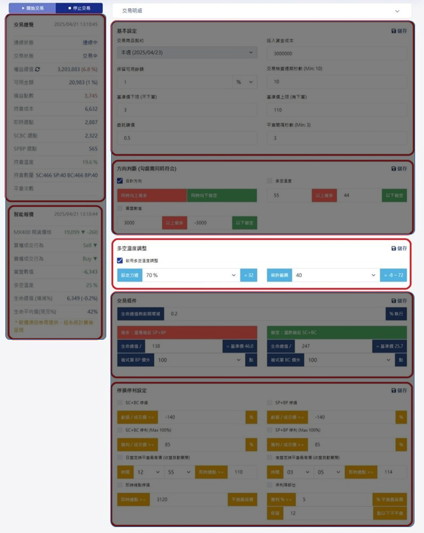

回到智能交易介面解說
多空溫度調整
設定力道
參考市場多空溫度的佔比
下拉 100％～0％
容許範圍
允許的安全溫度範圍（數字愈大容許愈大）
下拉 5～50
設定力道：參考市場多空溫度的佔比（％愈大，愈比照市場溫度；100％＝不打折）。
容許範圍：力道換算後的溫度結果，加減容許數值，避免反覆頻繁調整部位。
多空溫度調整：【交易總覽】的持倉溫度比對【智能報價】的多空溫度來調整部位。智能判斷：可用金額 大於 保留可用餘額，建立新正確部位；低於 保留可用餘額，平倉最大點數的部位。